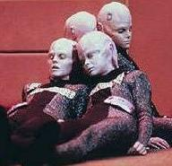

|
Binari
|
|
|
|  |
 |
Specie umanoide originaria di Bynaus. I Binari sono notevolmente integrati
con il network informatico del loro pianeta, che costituisce la struttura della
loro società. Generalmente, i Binari lavorano a coppie e sono connessi tra loro
attraverso un dispositivo chiamato buffer che consente un rapido scambio
di informazioni. I Binari sono sessualmente non identificabili come maschi o femmine.
Quando sono neonati, un chirurgo rimuove il lobo parietale e lo sostituisce con
un processore sinaptico (Regeneration).